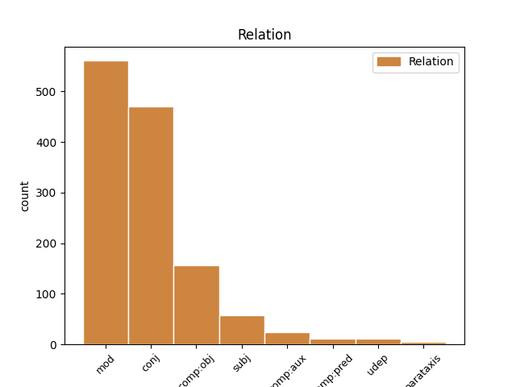
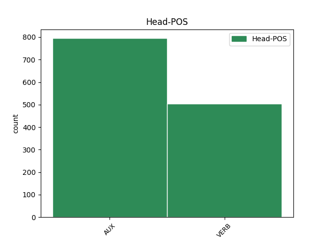
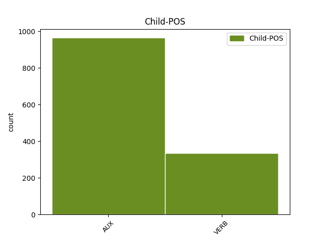

Distribution of features within this leaf



Agreement Rules sorted by frequency.
- When the dependent token is the modifer(mod) of the head token, and the head token is AUX
1 Eta _ _ _ _ 0 _ _ _
2 Ajuria _ _ _ _ 0 _ _ _
3 Eneko _ _ _ _ 0 _ _ _
4 iturriek _ _ _ _ 0 _ _ _
5 diotenez esan VERB _ Aspect=Prog|Mood=Ind|Number[abs]=Sing|Number[erg]=Plur|Person[abs]=3|Person[erg]=3 11 mod _ SpaceAfter=No
6 , _ _ _ _ 0 _ _ _
7 abisu _ _ _ _ 0 _ _ _
8 horren _ _ _ _ 0 _ _ _
9 ondorioz _ _ _ _ 0 _ _ _
10 etorri _ _ _ _ 0 _ _ _
11 zen izan AUX _ Mood=Ind|Number[abs]=Sing|Person[abs]=3 0 _ _ _
12 Xuntak _ _ _ _ 0 _ _ _
13 egindako _ _ _ _ 0 _ _ _
14 afaltzeko _ _ _ _ 0 _ _ _
15 gonbita _ _ _ _ 0 _ _ _
16 : _ _ _ _ 0 _ _ _
1 " _ _ _ _ 0 _ _ _
2 Egin _ _ _ _ 0 _ _ _
3 diren _ _ _ _ 0 _ _ _
4 txosten _ _ _ _ 0 _ _ _
5 polizialek _ _ _ _ 0 _ _ _
6 ez _ _ _ _ 0 _ _ _
7 dute ukan VERB _ Aspect=Prog|Mood=Ind|Number[abs]=Sing|Number[erg]=Plur|Person[abs]=3|Person[erg]=3 0 _ _ _
8 oinarririk _ _ _ _ 0 _ _ _
9 , _ _ _ _ 0 _ _ _
10 ikusten _ _ _ _ 0 _ _ _
11 da izan AUX _ Mood=Ind|Number[abs]=Sing|Person[abs]=3 7 conj _ _
12 loturarik _ _ _ _ 0 _ _ _
13 ez _ _ _ _ 0 _ _ _
14 dagoela _ _ _ _ 0 _ _ _
15 , _ _ _ _ 0 _ _ _
16 baina _ _ _ _ 0 _ _ _
17 hala _ _ _ _ 0 _ _ _
18 ere _ _ _ _ 0 _ _ _
19 prozesuarekin _ _ _ _ 0 _ _ _
20 jarraitu _ _ _ _ 0 _ _ _
21 nahi _ _ _ _ 0 _ _ _
22 dute _ _ _ _ 0 _ _ _
23 " _ _ _ _ 0 _ _ _
24 Izkok _ _ _ _ 0 _ _ _
25 dioenez _ _ _ _ 0 _ _ _
26 . _ _ _ _ 0 _ _ _
1 Oso _ _ _ _ 0 _ _ _
2 nahasi _ _ _ _ 0 _ _ _
3 ari _ _ _ _ 0 _ _ _
4 gara izan AUX _ Aspect=Prog|Mood=Ind|Number[abs]=Plur|Person[abs]=1 0 _ _ _
5 jokatzen _ _ _ _ 0 _ _ _
6 , _ _ _ _ 0 _ _ _
7 eta _ _ _ _ 0 _ _ _
8 sasoian _ _ _ _ 0 _ _ _
9 , _ _ _ _ 0 _ _ _
10 taktikan _ _ _ _ 0 _ _ _
11 eta _ _ _ _ 0 _ _ _
12 animoz _ _ _ _ 0 _ _ _
13 hobetu _ _ _ _ 0 _ _ _
14 behar _ _ _ _ 0 _ _ _
15 dugu ukan VERB _ Aspect=Prog|Mood=Ind|Number[abs]=Sing|Number[erg]=Plur|Person[abs]=3|Person[erg]=1 4 conj _ SpaceAfter=No
16 . _ _ _ _ 0 _ _ _
1 Euskal _ _ _ _ 0 _ _ _
2 Bizikletan _ _ _ _ 0 _ _ _
3 egindako _ _ _ _ 0 _ _ _
4 erakustaldiaren _ _ _ _ 0 _ _ _
5 ondoren _ _ _ _ 0 _ _ _
6 , _ _ _ _ 0 _ _ _
7 Euskalteleko _ _ _ _ 0 _ _ _
8 kirol _ _ _ _ 0 _ _ _
9 zuzendari _ _ _ _ 0 _ _ _
10 Julian _ _ _ _ 0 _ _ _
11 Gorospek _ _ _ _ 0 _ _ _
12 emaitza _ _ _ _ 0 _ _ _
13 onak _ _ _ _ 0 _ _ _
14 lortzeko _ _ _ _ 0 _ _ _
15 moduan _ _ _ _ 0 _ _ _
16 daudela egon VERB _ Aspect=Prog|Mood=Ind|Number[abs]=Plur|Person[abs]=3 18 comp:obj _ _
17 uste _ _ _ _ 0 _ _ _
18 du ukan VERB _ Aspect=Prog|Mood=Ind|Number[abs]=Sing|Number[erg]=Sing|Person[abs]=3|Person[erg]=3 0 _ _ _
19 . _ _ _ _ 0 _ _ _
1 " _ _ _ _ 0 _ _ _
2 Egin _ _ _ _ 0 _ _ _
3 diren _ _ _ _ 0 _ _ _
4 txosten _ _ _ _ 0 _ _ _
5 polizialek _ _ _ _ 0 _ _ _
6 ez _ _ _ _ 0 _ _ _
7 dute _ _ _ _ 0 _ _ _
8 oinarririk _ _ _ _ 0 _ _ _
9 , _ _ _ _ 0 _ _ _
10 ikusten _ _ _ _ 0 _ _ _
11 da _ _ _ _ 0 _ _ _
12 loturarik _ _ _ _ 0 _ _ _
13 ez _ _ _ _ 0 _ _ _
14 dagoela _ _ _ _ 0 _ _ _
15 , _ _ _ _ 0 _ _ _
16 baina _ _ _ _ 0 _ _ _
17 hala _ _ _ _ 0 _ _ _
18 ere _ _ _ _ 0 _ _ _
19 prozesuarekin _ _ _ _ 0 _ _ _
20 jarraitu _ _ _ _ 0 _ _ _
21 nahi _ _ _ _ 0 _ _ _
22 dute ukan VERB _ Aspect=Prog|Mood=Ind|Number[abs]=Sing|Number[erg]=Plur|Person[abs]=3|Person[erg]=3 0 _ _ _
23 " _ _ _ _ 0 _ _ _
24 Izkok _ _ _ _ 0 _ _ _
25 dioenez esan VERB _ Aspect=Prog|Mood=Ind|Number[abs]=Sing|Number[erg]=Sing|Person[abs]=3|Person[erg]=3 22 mod _ SpaceAfter=No
26 . _ _ _ _ 0 _ _ _
1 Bestetik _ _ _ _ 0 _ _ _
2 , _ _ _ _ 0 _ _ _
3 Mikel _ _ _ _ 0 _ _ _
4 Zuluagak _ _ _ _ 0 _ _ _
5 egin _ _ _ _ 0 _ _ _
6 duena *edun AUX _ Case=Abs|Definite=Def|Mood=Ind|Number=Sing|Number[abs]=Sing|Number[erg]=Sing|Person[abs]=3|Person[erg]=3 9 subj _ _
7 ere _ _ _ _ 0 _ _ _
8 txalogarria _ _ _ _ 0 _ _ _
9 da izan AUX _ Aspect=Prog|Mood=Ind|Number[abs]=Sing|Person[abs]=3 0 _ _ _
10 . _ _ _ _ 0 _ _ _
1 Aurrenekoz _ _ _ _ 0 _ _ _
2 Olinpiar _ _ _ _ 0 _ _ _
3 Jokoetan _ _ _ _ 0 _ _ _
4 izango _ _ _ _ 0 _ _ _
5 dena izan AUX _ Mood=Ind|Number[abs]=Sing|Person[abs]=3 0 _ _ _
6 , _ _ _ _ 0 _ _ _
7 erakusketa _ _ _ _ 0 _ _ _
8 kirol _ _ _ _ 0 _ _ _
9 bezala _ _ _ _ 0 _ _ _
10 bada _ _ _ _ 0 _ _ _
11 ere _ _ _ _ 0 _ _ _
12 , _ _ _ _ 0 _ _ _
13 ureko _ _ _ _ 0 _ _ _
14 eskia _ _ _ _ 0 _ _ _
15 izango _ _ _ _ 0 _ _ _
16 da izan AUX _ Mood=Ind|Number[abs]=Sing|Person[abs]=3 5 comp:aux _ SpaceAfter=No
17 . _ _ _ _ 0 _ _ _
1 Baina _ _ _ _ 0 _ _ _
2 subiranotasuna _ _ _ _ 0 _ _ _
3 eta _ _ _ _ 0 _ _ _
4 pakea _ _ _ _ 0 _ _ _
5 lortzea _ _ _ _ 0 _ _ _
6 denon _ _ _ _ 0 _ _ _
7 helburua _ _ _ _ 0 _ _ _
8 izanik _ _ _ _ 0 _ _ _
9 , _ _ _ _ 0 _ _ _
10 ikuspegi _ _ _ _ 0 _ _ _
11 horiek _ _ _ _ 0 _ _ _
12 adostasun _ _ _ _ 0 _ _ _
13 orokor _ _ _ _ 0 _ _ _
14 batean _ _ _ _ 0 _ _ _
15 kokatu _ _ _ _ 0 _ _ _
16 eta _ _ _ _ 0 _ _ _
17 aritzeko _ _ _ _ 0 _ _ _
18 aukera _ _ _ _ 0 _ _ _
19 delakoan izan VERB _ Aspect=Prog|Mood=Ind|Number[abs]=Sing|Person[abs]=3 20 udep _ _
20 gaude egon VERB _ Aspect=Prog|Mood=Ind|Number[abs]=Plur|Person[abs]=1 0 _ _ _
21 . _ _ _ _ 0 _ _ _
1 Dirudienez iruditu VERB _ Aspect=Prog|Mood=Ind|Number[abs]=Sing|Number[erg]=Sing|Person[abs]=3|Person[erg]=3 7 udep _ SpaceAfter=No
2 , _ _ _ _ 0 _ _ _
3 Sportingek _ _ _ _ 0 _ _ _
4 eskaintza _ _ _ _ 0 _ _ _
5 berbera _ _ _ _ 0 _ _ _
6 egin _ _ _ _ 0 _ _ _
7 dio *edun AUX _ Mood=Ind|Number[abs]=Sing|Number[dat]=Sing|Number[erg]=Sing|Person[abs]=3|Person[dat]=3|Person[erg]=3 0 _ _ _
8 orain _ _ _ _ 0 _ _ _
9 Realari _ _ _ _ 0 _ _ _
10 , _ _ _ _ 0 _ _ _
11 eta _ _ _ _ 0 _ _ _
12 horrek _ _ _ _ 0 _ _ _
13 eragin _ _ _ _ 0 _ _ _
14 du _ _ _ _ 0 _ _ _
15 Urangaren _ _ _ _ 0 _ _ _
16 harridura _ _ _ _ 0 _ _ _
17 eta _ _ _ _ 0 _ _ _
18 haserrea _ _ _ _ 0 _ _ _
19 . _ _ _ _ 0 _ _ _
1 Drogatik _ _ _ _ 0 _ _ _
2 irten _ _ _ _ 0 _ _ _
3 direnak izan AUX _ Case=Abs|Definite=Def|Mood=Ind|Number=Plur|Number[abs]=Plur|Person[abs]=3 4 subj _ _
4 badaude egon VERB _ Aspect=Prog|Mood=Ind|Number[abs]=Plur|Person[abs]=3|Polarity=Pos 0 _ _ _
5 , _ _ _ _ 0 _ _ _
6 eta _ _ _ _ 0 _ _ _
7 homosexualak _ _ _ _ 0 _ _ _
8 ere _ _ _ _ 0 _ _ _
9 gutxi _ _ _ _ 0 _ _ _
10 . _ _ _ _ 0 _ _ _
1 Osasunaren _ _ _ _ 0 _ _ _
2 definizioen _ _ _ _ 0 _ _ _
3 arazo _ _ _ _ 0 _ _ _
4 nagusiena _ _ _ _ 0 _ _ _
5 da izan AUX _ Aspect=Prog|Mood=Ind|Number[abs]=Sing|Person[abs]=3 0 _ _ _
6 ez _ _ _ _ 0 _ _ _
7 direla izan AUX _ Aspect=Prog|Mood=Ind|Number[abs]=Plur|Person[abs]=3 5 comp:pred _ _
8 erabilgarriak _ _ _ _ 0 _ _ _
9 . _ _ _ _ 0 _ _ _
1 Lehen _ _ _ _ 0 _ _ _
2 taldean _ _ _ _ 0 _ _ _
3 tokia _ _ _ _ 0 _ _ _
4 irabazteko _ _ _ _ 0 _ _ _
5 asmoz _ _ _ _ 0 _ _ _
6 ekin _ _ _ _ 0 _ _ _
7 zion _ _ _ _ 0 _ _ _
8 denboraldi-aurreari _ _ _ _ 0 _ _ _
9 eta _ _ _ _ 0 _ _ _
10 eman _ _ _ _ 0 _ _ _
11 duen _ _ _ _ 0 _ _ _
12 maila _ _ _ _ 0 _ _ _
13 ikusita _ _ _ _ 0 _ _ _
14 , _ _ _ _ 0 _ _ _
15 Liga _ _ _ _ 0 _ _ _
16 Lehen _ _ _ _ 0 _ _ _
17 Mailan _ _ _ _ 0 _ _ _
18 hasiko _ _ _ _ 0 _ _ _
19 duela *edun AUX _ Mood=Ind|Number[abs]=Sing|Number[erg]=Sing|Person[abs]=3|Person[erg]=3 20 comp:pred _ _
20 dirudi iruditu VERB _ Aspect=Prog|Mood=Ind|Number[abs]=Sing|Number[erg]=Sing|Person[abs]=3|Person[erg]=3 0 _ _ _
21 . _ _ _ _ 0 _ _ _
1 Atzo _ _ _ _ 0 _ _ _
2 sakean _ _ _ _ 0 _ _ _
3 asmatu _ _ _ _ 0 _ _ _
4 zuen *edun AUX _ Mood=Ind|Number[abs]=Sing|Number[erg]=Sing|Person[abs]=3|Person[erg]=3 0 _ _ _
5 bost _ _ _ _ 0 _ _ _
6 tanto _ _ _ _ 0 _ _ _
7 egin _ _ _ _ 0 _ _ _
8 zituen *edun AUX _ Mood=Ind|Number[abs]=Plur|Number[erg]=Sing|Person[abs]=3|Person[erg]=3 4 parataxis _ SpaceAfter=No
9 , _ _ _ _ 0 _ _ _
10 baina _ _ _ _ 0 _ _ _
11 eskuinarekin _ _ _ _ 0 _ _ _
12 ez _ _ _ _ 0 _ _ _
13 du _ _ _ _ 0 _ _ _
14 lehen _ _ _ _ 0 _ _ _
15 adina _ _ _ _ 0 _ _ _
16 gozatzen _ _ _ _ 0 _ _ _
17 . _ _ _ _ 0 _ _ _
1 Lurraren _ _ _ _ 0 _ _ _
2 barnealdetik _ _ _ _ 0 _ _ _
3 sortutako _ _ _ _ 0 _ _ _
4 indarrei _ _ _ _ 0 _ _ _
5 zor _ _ _ _ 0 _ _ _
6 zaizkienak izan VERB _ Aspect=Prog|Case=Abs|Definite=Def|Mood=Ind|Number=Plur|Number[abs]=Plur|Number[dat]=Plur|Person[abs]=3|Person[dat]=3 0 _ _ _
7 dira izan AUX _ Aspect=Prog|Mood=Ind|Number[abs]=Plur|Person[abs]=3 6 comp:aux _ SpaceAfter=No
8 , _ _ _ _ 0 _ _ _
9 eta _ _ _ _ 0 _ _ _
10 beste _ _ _ _ 0 _ _ _
11 atal _ _ _ _ 0 _ _ _
12 batean _ _ _ _ 0 _ _ _
13 landuko _ _ _ _ 0 _ _ _
14 ditugu _ _ _ _ 0 _ _ _
15 . _ _ _ _ 0 _ _ _
1 Jose _ _ _ _ 0 _ _ _
2 Maria _ _ _ _ 0 _ _ _
3 Ruiz _ _ _ _ 0 _ _ _
4 Mateos _ _ _ _ 0 _ _ _
5 enpresariak _ _ _ _ 0 _ _ _
6 jarritako _ _ _ _ 0 _ _ _
7 salaketa _ _ _ _ 0 _ _ _
8 ikertzen _ _ _ _ 0 _ _ _
9 ari _ _ _ _ 0 _ _ _
10 den _ _ _ _ 0 _ _ _
11 Garzonek _ _ _ _ 0 _ _ _
12 ez _ _ _ _ 0 _ _ _
13 du *edun AUX _ Mood=Ind|Number[abs]=Sing|Number[erg]=Sing|Person[abs]=3|Person[erg]=3 31 comp:obj _ _
14 oraindik _ _ _ _ 0 _ _ _
15 erabaki _ _ _ _ 0 _ _ _
16 afera _ _ _ _ 0 _ _ _
17 utziko _ _ _ _ 0 _ _ _
18 duenentz _ _ _ _ 0 _ _ _
19 , _ _ _ _ 0 _ _ _
20 nahiz _ _ _ _ 0 _ _ _
21 eta _ _ _ _ 0 _ _ _
22 Tardonek _ _ _ _ 0 _ _ _
23 , _ _ _ _ 0 _ _ _
24 fiskalak _ _ _ _ 0 _ _ _
25 eta _ _ _ _ 0 _ _ _
26 Estatuaren _ _ _ _ 0 _ _ _
27 abokatuak _ _ _ _ 0 _ _ _
28 hala _ _ _ _ 0 _ _ _
29 egiteko _ _ _ _ 0 _ _ _
30 eskatu _ _ _ _ 0 _ _ _
31 dioten *edun AUX _ Mood=Ind|Number[abs]=Sing|Number[dat]=Sing|Number[erg]=Plur|Person[abs]=3|Person[dat]=3|Person[erg]=3 0 _ _ _
32 . _ _ _ _ 0 _ _ _
1 Villar _ _ _ _ 0 _ _ _
2 Nafarroan _ _ _ _ 0 _ _ _
3 da izan VERB _ Aspect=Prog|Mood=Ind|Number[abs]=Sing|Person[abs]=3 0 _ _ _
4 egunotan _ _ _ _ 0 _ _ _
5 Nicolas _ _ _ _ 0 _ _ _
6 Leoz _ _ _ _ 0 _ _ _
7 , _ _ _ _ 0 _ _ _
8 Hegoamerikako _ _ _ _ 0 _ _ _
9 Futbol _ _ _ _ 0 _ _ _
10 Konfederazioko _ _ _ _ 0 _ _ _
11 presidentearekin _ _ _ _ 0 _ _ _
12 ( _ _ _ _ 0 _ _ _
13 Ledeako _ _ _ _ 0 _ _ _
14 arbasoak _ _ _ _ 0 _ _ _
15 dituelako _ _ _ _ 0 _ _ _
16 omendu _ _ _ _ 0 _ _ _
17 du *edun AUX _ Mood=Ind|Number[abs]=Sing|Number[erg]=Sing|Person[abs]=3|Person[erg]=3 3 parataxis _ _
18 Nafarroako _ _ _ _ 0 _ _ _
19 Gobernuak _ _ _ _ 0 _ _ _
20 ) _ _ _ _ 0 _ _ _
21 . _ _ _ _ 0 _ _ _
Disagree Examples:
1 Zoroastrismoa _ _ _ _ 0 _ _ _
2 , _ _ _ _ 0 _ _ _
3 segi _ _ _ _ 0 _ _ _
4 dezagun *ezan AUX _ Mood=Sub|Number[abs]=Sing|Number[erg]=Plur|Person[abs]=3|Person[erg]=1 15 mod _ _
5 irudikatzen _ _ _ _ 0 _ _ _
6 , _ _ _ _ 0 _ _ _
7 pentsa _ _ _ _ 0 _ _ _
8 litekeen _ _ _ _ 0 _ _ _
9 erlijio _ _ _ _ 0 _ _ _
10 zuzen _ _ _ _ 0 _ _ _
11 , _ _ _ _ 0 _ _ _
12 ireki _ _ _ _ 0 _ _ _
13 eta _ _ _ _ 0 _ _ _
14 ederrena _ _ _ _ 0 _ _ _
15 da izan AUX _ Aspect=Prog|Mood=Ind|Number[abs]=Sing|Person[abs]=3 0 _ _ _
16 . _ _ _ _ 0 _ _ _
1 Ezen _ _ _ _ 0 _ _ _
2 , _ _ _ _ 0 _ _ _
3 BEAko _ _ _ _ 0 _ _ _
4 txostenean _ _ _ _ 0 _ _ _
5 irakur _ _ _ _ 0 _ _ _
6 daitekeenez *edin AUX _ Mood=Pot|Number[abs]=Sing|Person[abs]=3 17 mod _ SpaceAfter=No
7 , _ _ _ _ 0 _ _ _
8 Concordea _ _ _ _ 0 _ _ _
9 zerbitzuan _ _ _ _ 0 _ _ _
10 jarri _ _ _ _ 0 _ _ _
11 zenetik _ _ _ _ 0 _ _ _
12 keroseno _ _ _ _ 0 _ _ _
13 ontzietan _ _ _ _ 0 _ _ _
14 sei _ _ _ _ 0 _ _ _
15 aldiz _ _ _ _ 0 _ _ _
16 gertatu _ _ _ _ 0 _ _ _
17 dira izan AUX _ Mood=Ind|Number[abs]=Plur|Person[abs]=3 0 _ _ _
18 kaltetzeak _ _ _ _ 0 _ _ _
19 , _ _ _ _ 0 _ _ _
20 baina _ _ _ _ 0 _ _ _
21 sekula _ _ _ _ 0 _ _ _
22 ez _ _ _ _ 0 _ _ _
23 zen _ _ _ _ 0 _ _ _
24 erregaiak _ _ _ _ 0 _ _ _
25 su _ _ _ _ 0 _ _ _
26 hartzerik _ _ _ _ 0 _ _ _
27 gertatu _ _ _ _ 0 _ _ _
28 . _ _ _ _ 0 _ _ _
1 Ez _ _ _ _ 0 _ _ _
2 da _ _ _ _ 0 _ _ _
3 jangarria _ _ _ _ 0 _ _ _
4 , _ _ _ _ 0 _ _ _
5 zenbait _ _ _ _ 0 _ _ _
6 autorek _ _ _ _ 0 _ _ _
7 erdipurdiko _ _ _ _ 0 _ _ _
8 jangarritzat _ _ _ _ 0 _ _ _
9 jotzen _ _ _ _ 0 _ _ _
10 badute _ _ _ _ 0 _ _ _
11 ere _ _ _ _ 0 _ _ _
12 , _ _ _ _ 0 _ _ _
13 erdi _ _ _ _ 0 _ _ _
14 egina _ _ _ _ 0 _ _ _
15 jaten _ _ _ _ 0 _ _ _
16 baldin _ _ _ _ 0 _ _ _
17 bada izan AUX _ Mood=Ind|Number[abs]=Sing|Person[abs]=3 20 mod _ _
18 pozoiketak _ _ _ _ 0 _ _ _
19 sorraraz _ _ _ _ 0 _ _ _
20 bailitzake *ezan AUX _ Mood=Pot|Number[abs]=Plur|Number[erg]=Sing|Person[abs]=3|Person[erg]=3 0 _ _ _
21 . _ _ _ _ 0 _ _ _
1 Ez _ _ _ _ 0 _ _ _
2 da izan AUX _ Aspect=Prog|Mood=Ind|Number[abs]=Sing|Person[abs]=3 0 _ _ _
3 jangarria _ _ _ _ 0 _ _ _
4 , _ _ _ _ 0 _ _ _
5 zenbait _ _ _ _ 0 _ _ _
6 autorek _ _ _ _ 0 _ _ _
7 erdipurdiko _ _ _ _ 0 _ _ _
8 jangarritzat _ _ _ _ 0 _ _ _
9 jotzen _ _ _ _ 0 _ _ _
10 badute _ _ _ _ 0 _ _ _
11 ere _ _ _ _ 0 _ _ _
12 , _ _ _ _ 0 _ _ _
13 erdi _ _ _ _ 0 _ _ _
14 egina _ _ _ _ 0 _ _ _
15 jaten _ _ _ _ 0 _ _ _
16 baldin _ _ _ _ 0 _ _ _
17 bada _ _ _ _ 0 _ _ _
18 pozoiketak _ _ _ _ 0 _ _ _
19 sorraraz _ _ _ _ 0 _ _ _
20 bailitzake *ezan AUX _ Mood=Pot|Number[abs]=Plur|Number[erg]=Sing|Person[abs]=3|Person[erg]=3 2 mod _ SpaceAfter=No
21 . _ _ _ _ 0 _ _ _
1 Litekeena *edin VERB _ Aspect=Prog|Mood=Pot|Number[abs]=Sing|Person[abs]=3 2 comp:pred _ _
2 da izan AUX _ Aspect=Prog|Mood=Ind|Number[abs]=Sing|Person[abs]=3 0 _ _ _
3 bati _ _ _ _ 0 _ _ _
4 senda-agiria _ _ _ _ 0 _ _ _
5 berehala _ _ _ _ 0 _ _ _
6 ematea _ _ _ _ 0 _ _ _
7 . _ _ _ _ 0 _ _ _